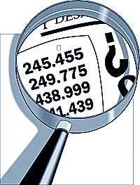

Who am I?
- Marcos Vanetta
- Hacks/Hackers Buenos Aires
- Knight/Mozilla Fellow
- The Texas Tribune
- @malev
Why do we want data?
Tell a story
Answer a question
Play
Type of data
- Qualitative
- Quantitative
- Categorizable
- Integer numbers
- Real numbers
- Date
- Address
- ...
Structured data vs Unstructured data
Where can we find data?

Portal/Catalogs
- Goverments
- Universities
- Research institutes
- NGO
- Companies
- Media orgs
We can make data
- Investigations
- Polls
- Sensors
- ...
What kind of data can we find?
- Spreadsheets (CSV, Excel, ODS)
- JSON, XML, HTML
- DataBase
- PDF, Word
- Who knows?
(╯°□°)╯︵ ┻━┻
Data in portals
Find
- Content
- Source
- Format
- Type of data per fields
- Range
Things to pay attention
- What are the max and min values
- NA / None / Nothing is not 0
- Dates (from-to)
- Impossible values
- Geo referenced addresses
- Possible categories
What can we do with the data?
- Store
- Share
- Analyze it
- Visualize it